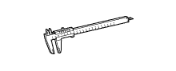
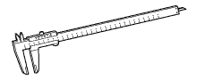

СТОЯНОЧНЫЙ ТОРМОЗ В СБОРЕ > РАЗБОРКА > Подготовка

| Датчик тормозного барабана | - |
| Штангенциркуль | - |
| Динамометрический ключ | - |
|  | 09072-1C200 | Штангенциркуль 150 мм | - |
|  | 09072-1C210 | Штангенциркуль 300 мм | - |
 | 09082-00040 | Электрический диагностический прибор TOYOTA | - |
 | (09083-00150) | Комплект проводов для диагностического прибора | - |